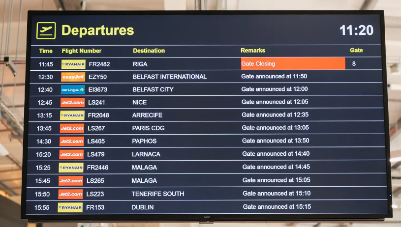
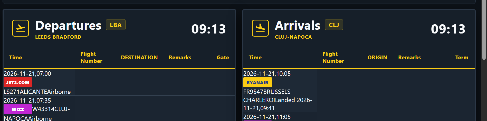

> DIRECTORY // PROJECT_AIRPORT
Status: ONLINE // RUNNING on GITHUB Pages
A locally hosted, real-time airport Departures & Arrivals terminal display board built with HTML, CSS, JavaScript, and a lightweight Python proxy server connected to the AirLabs Aviation API.
The idea came from a board like this :

The finished project look like this(before some update) :
